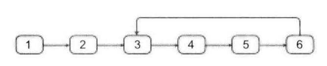
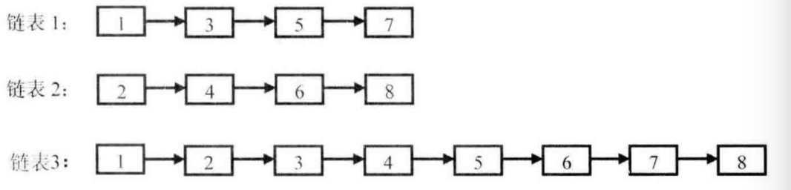
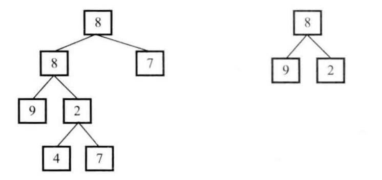

3个方面确保代码的完整性
功能测试(基本功能)
边界测试(边界条件)
负面测试(错误输入)
16. 数的整数次方
实现函数Power(double base,int exponent),求base的exponent次方。不得使用库函数。
思路
用循环不断相乘是一种方法。但很容易想到，如果数值很大的时候，就会出现溢出。不能满足需求。
周密性考察
考虑到大数问题(我们这里不考虑大数问题)
考虑到指数的负数问题
考虑到指数为0的问题
关键的是大数问题，直接影响到我们的实现方式
优化思路（快速做乘方）
假如果我们的目标是求出一个数字的32次方。若果我们已经知道了它的16次方。那么只要在16次方的基础上在平方一次就可以了。而16次方是8次方的平方。这样就可以减少乘积的次数。
17. 打印从1到最大的n位数(如果用递归解决的话比较经典)
输入数字n,按顺序打印出从1到最大的n位十进制数，比如输入3，则打印出1，2，3，一直到最大的3为数999；
思路(这个思路很传统)
模拟加法
思路二(哈哈，这个思路很精妙)
递归打印。当为们想到全排列的时候，可以采用递归的方式
18. 删除链表的节点
在O(1)时间内删除链表节点。
给定单向链表的头指针和一个节点指针，定义在O（1）时间内删除该节点。
思考
要在O(1)时间内删除，普通做法是要找到所要删除节点的上一个节点，时间复杂度为O（n）。所以采取其他方法。
思路
可以将指定节点的后面节点的值赋值给当前节点。然后将后面节点的后面节点连接上当前节点。
有些特殊情况需要考虑。一是：当所要删除的是最后一个节点，则只能从最开始遍历。二是。所删除节点是倒数第二个节点。赋值后，直接将当前节点的next节点置位null;三是，指定的节点在原有链表中不存在的特殊处理。四是，链表本身是空
19. 正则表达式(未完成)
请实现一个函数用来匹配包含“."和""的正则表达式。模式中的字符”."表示任意一个字符，而“” 表示它前面的字符可以出现任意次（包含0次）。在本题中匹配是指字符串的所有字符匹配整个模式。例如字符串“aaa"与模式"a.a"和"abaca"匹配，当与”aa.a"和"ab*a"均不匹配。
思路
我的思路，遍历模式，一个以字符与需要匹配的字符相比较。遇到'.',需要匹配的字符跳过一个，模式也要跳过一个。因为'.'表示任意一个字符。如果字符与需要匹配的不相同，有两种选择，若果模式后面有*。则可以将其和*忽略，相当于有0个这个字符。然后与后面的进行比较.
20.表示数值的字符串(未完成)
请实现一个函数用来判定字符串是否表示数值。例如字符串"+100","5e2","-123","3.1412","-1E-16"都表示数值。
21.调整数组顺序使奇数位与偶数前面
输入一个整数数组，实现一个函数来调整该数组中数字的顺序，使得所有奇数位于数组的前半部分，所有偶数位于数组的后半部分
思路
采用两个指针头尾，头尾同时判定，头为奇数++，尾为偶数++,头为偶数，直到尾为奇数然后交互, 这样在o(n)的时间复杂度
22.链表中倒数第K个节点
输入一个链表，输出该链表中倒数第k个节点。（最后一个节点为1）
思路
一般思路，遍历以便链表，几下链表长度。然后将从头开始遍历。走n-k步就可以了
也可以用一个辅助栈，将说有元素入栈，完事后将其弹出k个最后一个就是
优化思路
可以采用两个指针，前一个指针走了k步后，后一个指针开始走。这只需要遍历一次就能找到倒数第k个节点
23. 链表中环的入口节点
如果一个链表中包含环，如何找到环的入口节点？

思路
链表的解决方案都有比较好的套路。
判定是否有环：搞两个指针一个走两步，一个走一步，有环的话，快指针会赶上慢指针。
找入口：如果是相遇，那么必然在环里，然后看环有多个元素。从相遇的那个节点开始，做遍历，必然会回到这，可以查看有多少个元素。加入为k个元素。还是用两个指针，p1,p2,p2向前走k个元素，然后p1与p2同时走。当相遇时，就是环的入口节点.
24. 反转链表
定义一个函数，输入一个链表的头节点，反转该链表并输出反转后链表的头节点。
思路
定义新的头节点，取出就节点的后一个节点，放到新的节点的前面（即采用头插法）。在最后将头旧的头节点的next置为null;反回新的头节点就可以了。这里要特别注意节点信息的丢失
从上面的思路可以看出也能用递归实现
递归的头条件还是那些条件。终止条件其实也是一样的。
25. 合并两个排序的链表
输入两个递增排序的链表，合并这两个链表并使新链表中的节点任然是递增排序的。

思路
比较两个链表的头，以头小的为准。边遍历，边比较与链表2的头。p.next与链表2比较。P.next大则将链表2的节点连接到链表1，更新链表2的头。如果表1的p.next==null,则直接将表2的放在表1的后面
时间复杂度为o(m+n);
优化思路（用递归实现的思路要清晰一些）(思想很重要)
思路其实和上面的一样。只是从不同的角度去看。这里从递归的角度去看问题。在比较两个链表的头部后，将小的放入新的链表的后面。这样重复炒作。就是一个递归问题。
26. 树的子结构
输入两棵二叉树A和B,判断B是不是A的子结构.

思路
按照树的处理，无非就时遍历。在这里要比较两树，可以遍历一个节点时，去比较是否是子树，遍历一个节点时，比较时否时子树。在遍历时节点时，本身就时一个递归的实现，在判断是否是子树时，又是一个递归遍历。
在这种多个流程里含有递归的情况很多。必过在全排列的时候，就时一个for循环是里有一个递归